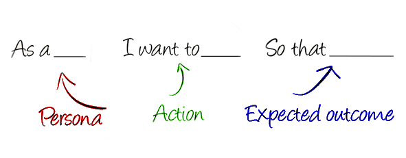

Historias de Usuario
Requerimientos Agiles
Created by Gastón Nina / @gastonnina
Recordemos
Scrum

Visión

Goal
Inception


Inception


Inception Importance
Israel Antezana - Inception
Historia de Usuario
Diagrama

Perspectiva
| Requerimiento | Historia de Usuario |
|---|---|
 |
 |
| Sistema | Usuario |
Estructura

INVEST

Wiki Card
{kind=link}
Criterios de aceptación

Criterios de aceptación
(Scenario) Escenario [Número de escenario] [Titulo del escenario]:
(Given) En caso que [Contexto] y adicionalmente [Contexto],
(When) cuando [Evento],
(Then) entonces el sistema [Resultado / Comportamiento esperado]
DOD


Lack

Lack Definition
 Lacking
Lacking
MoSCoW

Planning Poker

Planitpoker
Inventemos!

Problema 1
- Érase una vez ...
- Y todos los días ...
- Hasta que un día ...
- Y entonces, debido a que ...
- Y entonces, debido a que ...
- Y desde ese día ...
Éraze una vez
Story Mapping

Ejemplo Story Mapping

Artículo

Story Mapping User Types
Estimación, Priorización y Seguimiento de un Proyecto Ágil Empleando el User Story Map from Jorge Hernán Abad Londoño
Estimación y priorización
Casos de Exito!
Casos de Exito
| Comunidad | Oficina |
|---|---|
 Hackaton |
 Cobee |